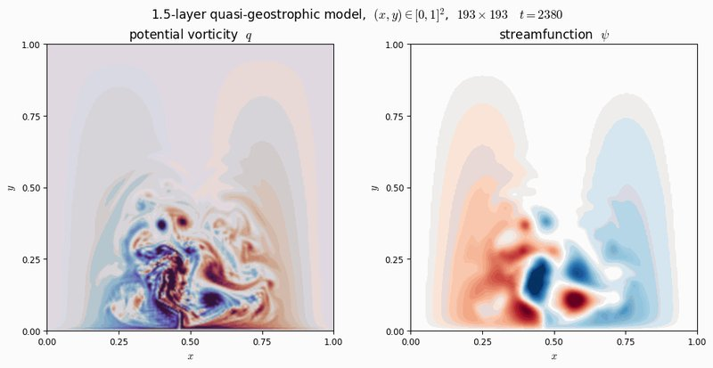

Open-source code from the lab. Every package is documented in a SoftwareX paper and lives on GitHub.

A web platform for interactive data assimilation benchmarking. Experiments run on the server and stream their output to the browser in real time, and every run is stored so it can be compared later. It builds on the TEDA code base and adds larger test models such as the quasi-geostrophic model shown here.
A lightweight, object-oriented Python toolbox for teaching ensemble-based data assimilation. Students pick a method, a toy model and an observation setup, run the simulation and look at how background and analysis errors evolve.
from analysis.analysis_enkf_modified_cholesky import AnalysisEnKFModifiedCholesky
model = Lorenz96()
background = Background(model, ensemble_size=20)
analysis = AnalysisEnKFModifiedCholesky(model, r=2)
observation = Observation(m=32, std_obs=0.01)
params = {'obs_freq': 0.1, 'obs_times': 10, 'inf_fact': 1.04}
simulation = Simulation(model, background, analysis, observation, params=params)
simulation.run()
errb, erra = simulation.get_errors() # background and analysis errors per stepToy models included: the Duffing equation (2 variables), Lorenz-63 (3 variables) and Lorenz-96 (40 variables), all chaotic under the right parameters. New models and methods plug in through the same abstract classes.
| Class | Method | Reference |
|---|---|---|
AnalysisEnKF | EnKF with the full covariance matrix | Evensen (2009) |
AnalysisEnKFNaive | EnKF via an iterative Sherman-Morrison formula | Nino-Ruiz, Sandu, Anderson (2015) |
AnalysisEnKFCholesky | EnKF via Cholesky decomposition | Mandel (2006) |
AnalysisEnKFModifiedCholesky | EnKF via modified Cholesky decomposition | Nino-Ruiz, Sandu, Deng (2018) |
AnalysisEnKFShrinkagePrecision | EnKF with shrinkage precision matrix | Nino-Ruiz, Sandu (2015) |
AnalysisEnKFBLoc | EnKF with B-localization | Greybush et al. (2011) |
AnalysisEnSRF | Ensemble square root filter | Tippett et al. (2003) |
AnalysisETKF | Ensemble transform Kalman filter | Bishop, Etherton, Majumdar (2001) |
AnalysisLETKF | Local ensemble transform Kalman filter | Hunt, Kostelich, Szunyogh (2007) |
AnalysisLEnKF | Local ensemble Kalman filter | Ott et al. (2004) |
Code we use in our own experiments, packaged for reuse.
Data assimilation for atmospheric general circulation models. This is the package the lab uses for experiments with the SPEEDY model at near-operational resolutions, including ensemble-based methods for its leapfrog integration scheme.
The aml_pred_assim package estimates precision (inverse covariance) matrices from small samples in high dimensions via a modified Cholesky decomposition. It downloads climate fields from the Copernicus Climate Data Store, builds the predecessor structure of each grid point and fits the sparse factors with ridge regression, saving everything to NetCDF.